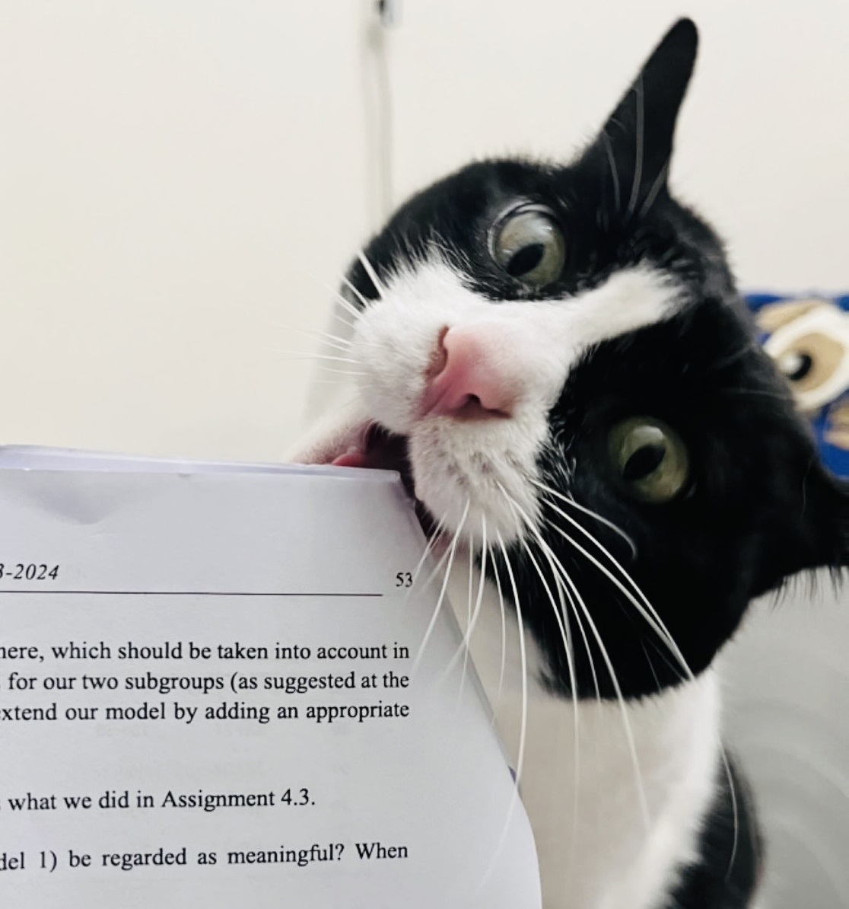
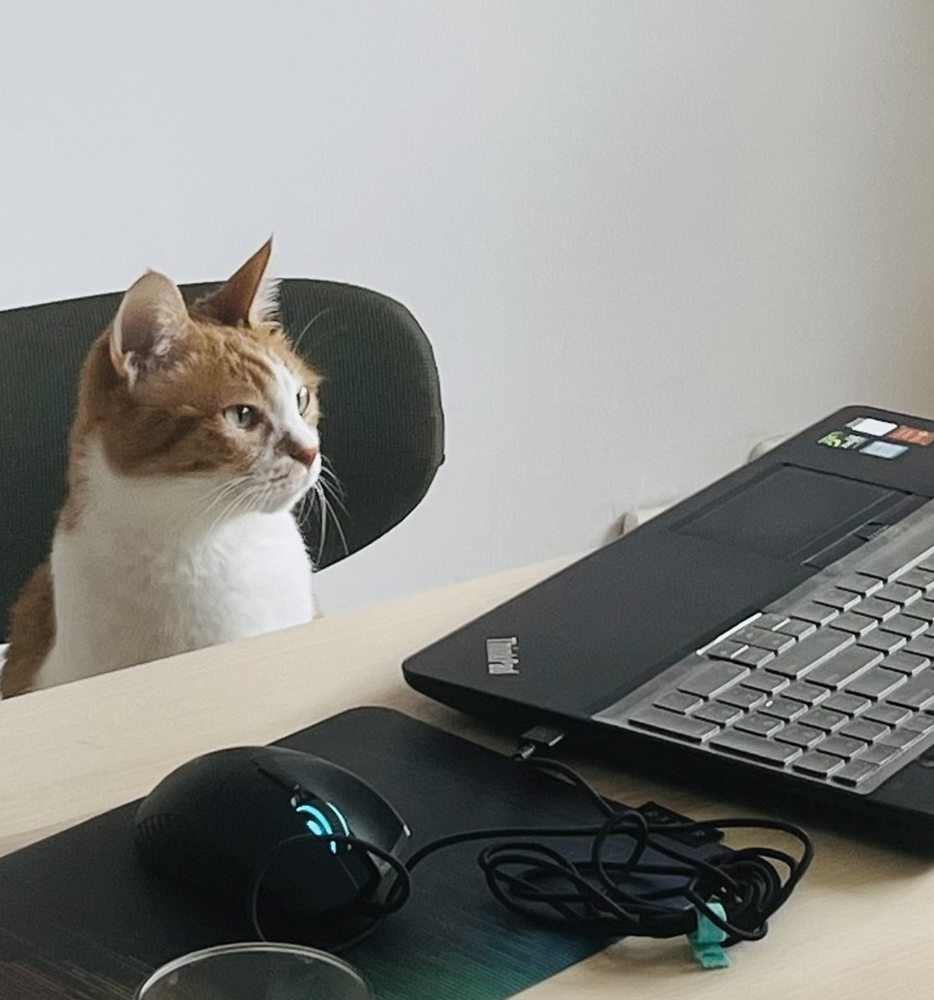

(朱 /ʈʂu55/)(梓 /tsɯ21˦/)(月 /ɥœ51/)
also known as Jessie Ziyue Zhu
Master of Statistics and Data Science
[Master Project Repository]
Katholieke Universiteit Leuven
Master of Economics
[Master Project Presentation]
Universitat Pompeu Fabra
BSc in Economics
Wuhan University
[Show/hide Email]
ziyue[dot]zhu[at]maastrichtuniversity[dot]nl
Hello!
I am a PhD candidate in Labor Economics at the Research Centre for Education and the Labour Market (ROA), Maastricht University.
My research interests lie in:
Public Goods Contribution:
mixrandregret[Repository]Skill Matters: Curriculum updates and Labor Market Outcomes
with Didier Fouarge, Barbara Belfi, and Melline Somers (Draft Available Soon)
presented at: BIBB Research Colloquium, ELMI 2024, Studi-BUCH Text-as-data workshop (2nd, 2024), Skills2Capabilities Project Meetings (EU Horizon), LEER (9th, 2024)
Does Gen AI Information Shape Career Preferences? Experimental Evidence
with Yang Tianyu, Barbara Belfi, and Carla Haelermans (Draft Available Soon)
presented at: EALE (2024), ESPE (2024), LEER (9th, 2024)
Accelerated Digital Transformation and Skill Mismatch: Evidence from Europe
with Yang Tianyu (Draft Available Soon)
presented at: BIR workshop 2025, Cedefop ESJS2 workshop
Adult children's education and patterns of family support in China
with Zhenxing Chang, Rufei Guo, Lin Lin
AI acceptance in the workplace: the impact of social factors on employees’ behavior towards AI implementations
with Ann-Yu Happ and Barbara Belfi
Unfolding Human Mobility Patterns in Response to Natural Disasters
with Roy Meijer, Timur Naushirvanov, Yueyang Yi, and Yijie Zhou
Fitting mixed logit random regret minimization models using maximum simulated likelihood
with Álvaro A. Gutiérrez-Vargas, Martina Vandebroek
the Stata Journal 24 (2)
Click for Abstract
This article describes the mixrandregret command, which extends the randregret command introduced in Gutiérrez-Vargas et al.
(2021, The Stata Journal 21: 626-658) incorporating random coefficients for Random Regret Minimization models. The newly
developed command mixrandregret allows the inclusion of random coefficients in the regret function of the classical RRM
model introduced in Chorus (2010, European Journal of Transport and Infrastructure Research 10: 181-196). The command allows
the user to specify a combination of fixed and random coefficients. In addition, the user can specify normal and log-normal
distributions for the random coefficients using the commands' options. The models are fitted using simulated maximum likelihood
using numerical integration to approximate the choice probabilities.
2025: AI and Machine Learning workshop (Maastricht, NL); IWAEE (Catanzaro, IT); BIR Workshop (Bonn, DE); EU Horizon: Skills2Capabilities Meeting 2025 (Dortmund, Germany)
2024: CEDEFOP workshop (Thessaloniki, GR); NetMob Conference (Oral Presentation & Poster, Washington, D.C.)*; ELMI (Brussels, BE)*; EALE (Bergen, NO)*; ESPE (Rotterdam, NL)*; the second Studi-BUCH Text-as-data workshop (Essen, DE); EU Horizon: Skills2Capabilities Meeting (Venice, Italy); 9th LEER Conference on Education Economics (Leuven, Belgium) [Abstract]
2022: mixrandregret Stata Conference: London, the UK* [Link]
*Presented by coauthors
Master Thesis Supervision
Guest Lecture: Minerva (R studio) Workshop
Tutor at Maastricht University:
Undergraduate Teaching Assistant at Wuhan University (Mar - Jun 2018):
Education/Labour Economics Materials:
Discrete Choice Modelling:
mixrandregret[Repository]randregret[Repository]Apollo[Website]LaTex:
My Collection of Lecture Notes [EconResources]
Advice for PhD Students in Economics [EconGradAdvice]
I would like to thank Dr. Joy and Dr. Flora for their expertise in successfully waking me up in the morning and keeping me awake at night to make my research projects possible.
|  |  |
| Dr. Joy PhD, Meowstricht University |
Dr. Flora PhD, Research Center for Kattencation and Labour Meowcat |
Thanks to Vasilios Mavroudis for the template! And thanks to Ali Siahkoohi for added CSS and switch theme function!